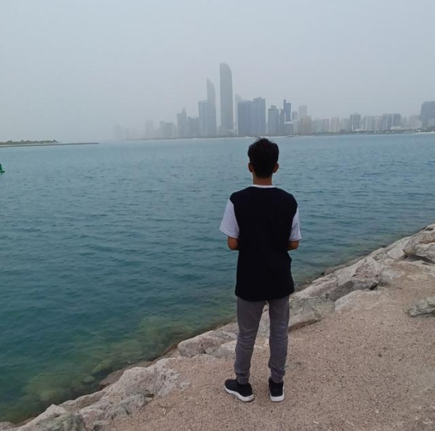

TAHA AYYA

Hey there! 👋 I’m Taha Ayya, a recent high school graduate with a passion for all things web-related.
Here’s a glimpse into my world:
- My journey began with HTML tags and CSS stylesheets. I’ve tinkered with JavaScript, danced with React.
js, and even whispered sweet nothings to Node.js. The thrill of turning lines of code into functional
websites? It’s my adrenaline rush.
- Beyond the syntax, I appreciate aesthetics. Fonts, colors, layouts—I devour them like a hungry developer.
Crafting user-friendly interfaces? It’s my jam.
- Bugs? They’re my puzzle pieces. I dive into the console, hunting down errors like a digital Sherlock.
And when I fix that glitch? Cue the victory dance!
- I dream of building sleek interactive apps, and maybe even a personal blog.
Learning never stops—I’m eyeing those full-stack skills next.
So, whether it’s pixels or APIs, I’m here to create, learn, and make the web a better place. Let’s connect!
Remember, your journey is just beginning. Keep coding, stay curious, and embrace the magic of web development!
EDUCATION
I have completed my class 10 from M.S.B Educational Institute,Nagpur.And class 12 from coaching.
About me
Contact me